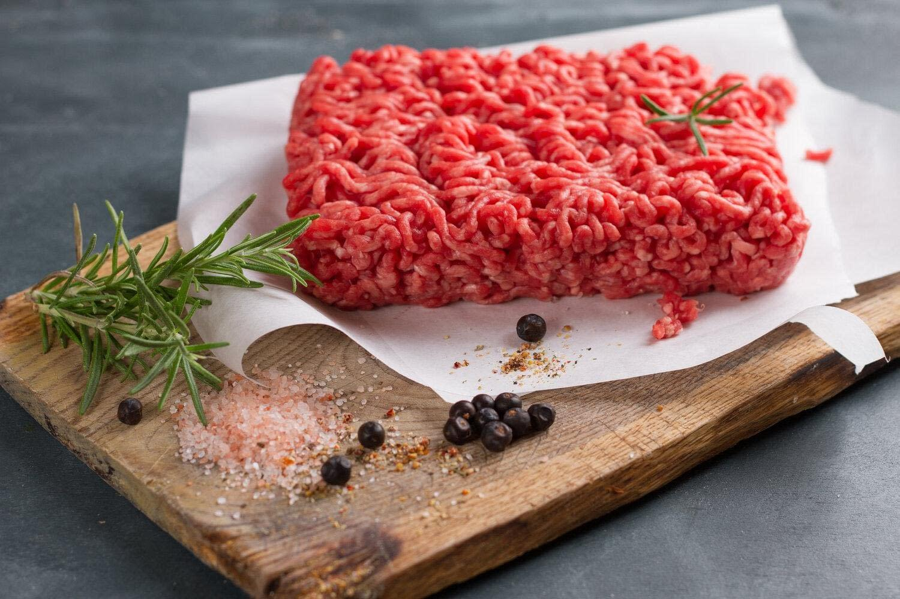
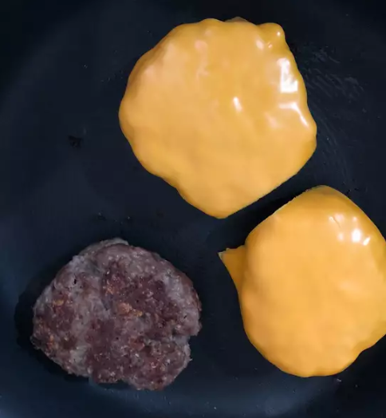
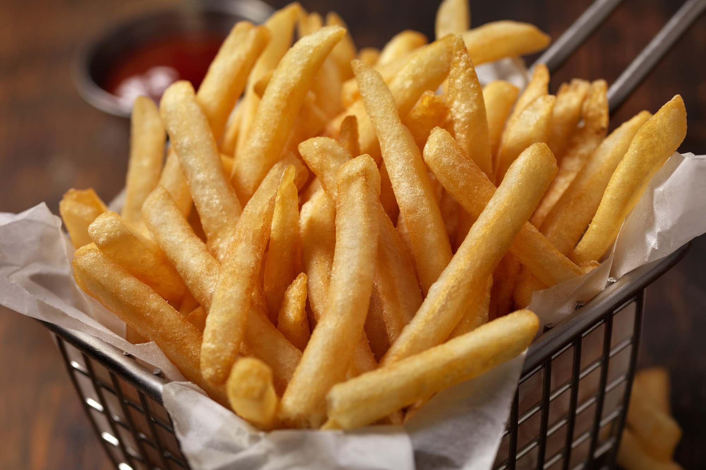
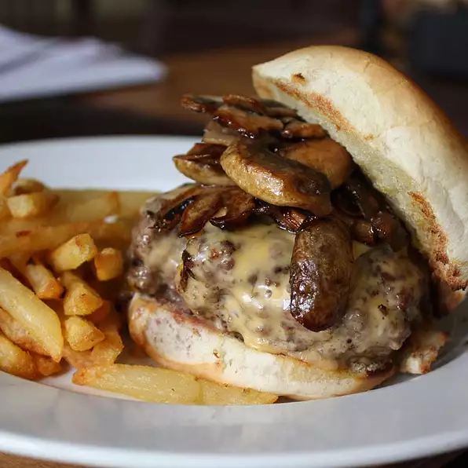

Ingradients required
We need
1. 1 large egg
2. ½ teaspoon salt
3. ½ teaspoon ground black pepper
4. 1 pound ground beef
5. two bread buns
6. Two potatos
Step 1:
First we should season the beef used to make the burger itself so we whisk together egg, salt, and pepper in a medium bowl. Add ground beef and bread crumbs and mix with your hands or a fork until well blended. Form into four 3/4-inch-thick patties.
Step 2:
We will leave it for at least half an hour to be seasoned properly
Step 3:
Now we shold preheat an outdoor grill for high heat and lightly oil grate.
Step 4:
Place patties on the preheated grill. Cover and cook 6 to 8 minutes per side, or to desired doneness. An instant-read thermometer inserted into the center should read at least 160 degrees F (70 degrees C).

Step 5:
We will wash the potatoes, cut them to slices and season them with salt and vingar
Step 6:
We now preheat another ban to cook the fries on high heat, extract the fries after they are done and place them on wipes for drying oil

Step 7:
Serve the fries with the burger on the plate and enjoy your meal ♥️
